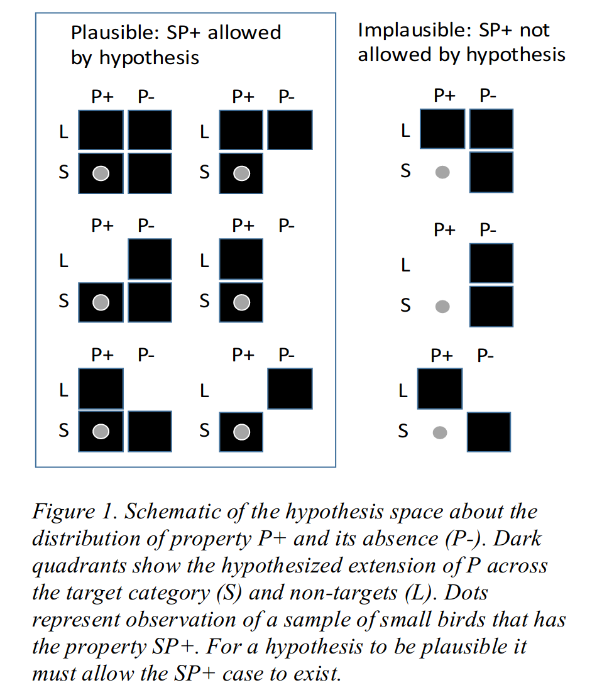
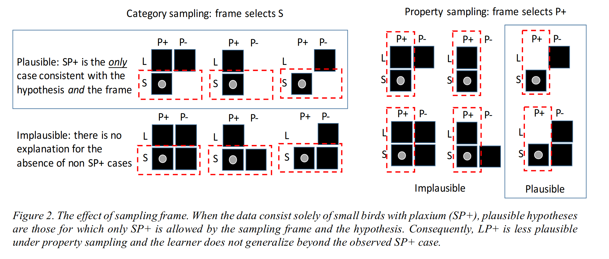
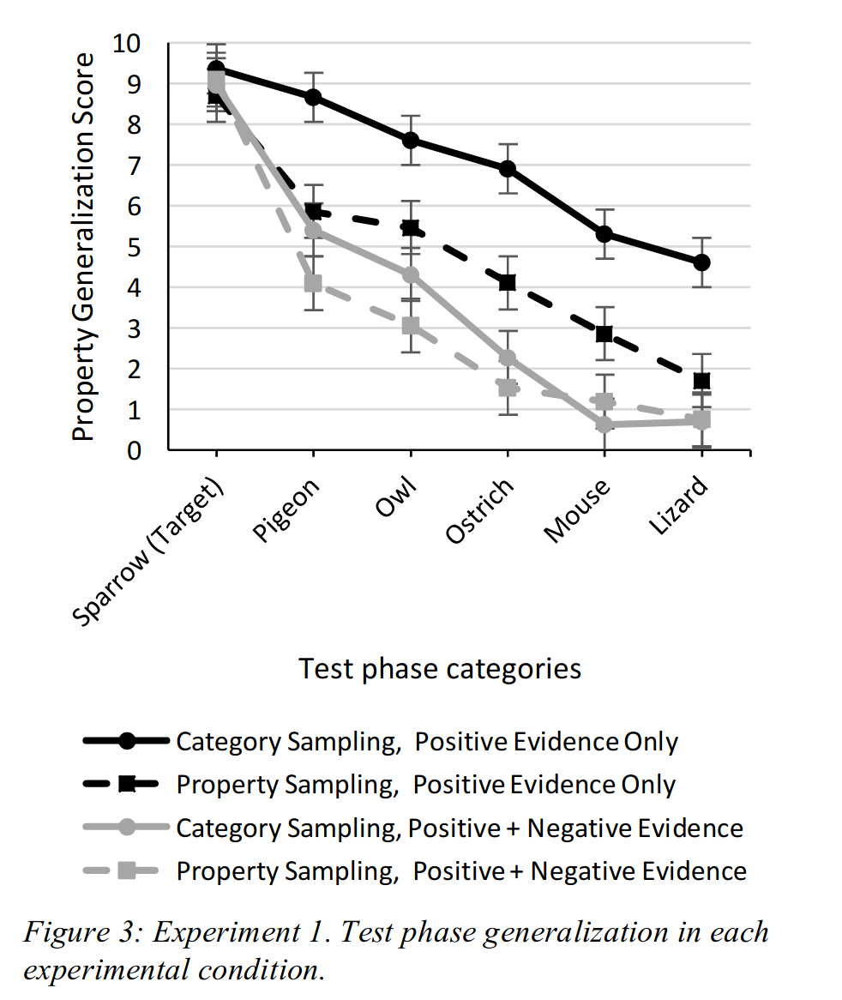
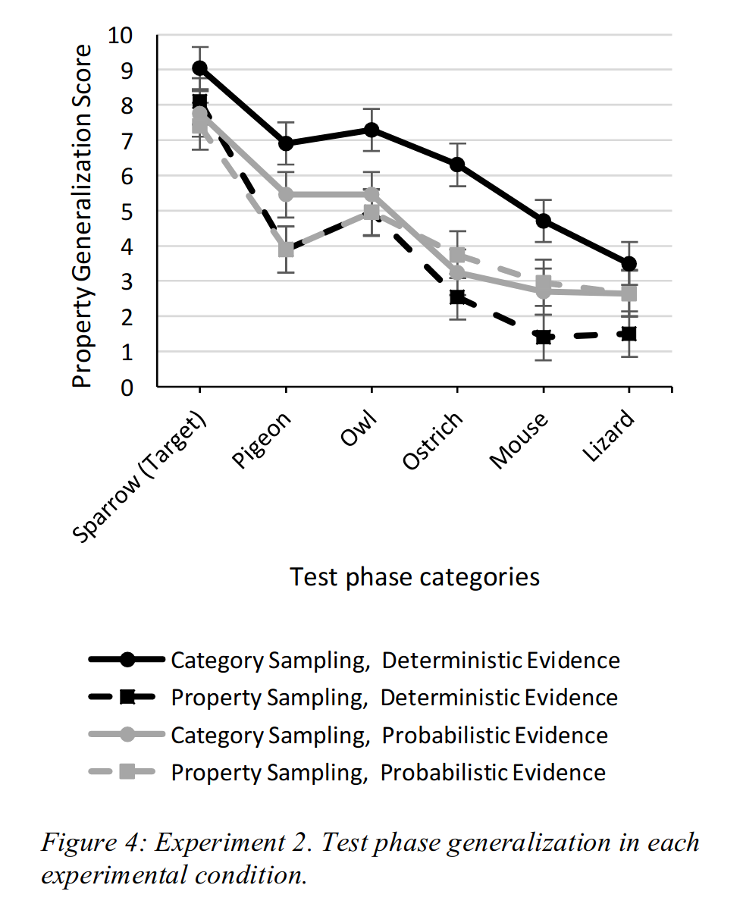

Sampling frames, Bayesian inference and inductive reasoning
Brett K. Hayes (b.hayes@unsw.edu.au)
Stephanie Banner (steph22banner@gmail.com)
Danielle J. Navarro (d.navarro@unsw.edu.au)
School of Psychology, University of New South Wales
Sydney, 2052, Australia
Abstract
We outline and test a Bayesian model of the effects of evidence sampling on property induction. Our model assumes that people are sensitive to the effects of different sampling frames applied to sampled evidence. Two studies tested the model by comparing property generalization following exposure to samples selected because they belong to the same taxonomic category or because they share a salient property. Both studies found that category-based sampling led to broader generalization than property-based sampling. In line with model predictions, these differences were attenuated when a mixture of positive and negative evidence was presented (Experiment 1) and when category-property relations were probabilistic rather than deterministic (Experiment 2).
Keywords: Inductive reasoning; Sampling; Hypothesis testing; Bayesian models; Categorization
Citation: Hayes, B.K., Banner S. & Navarro, D.J (2017). Sampling frames, Bayesian inference and inductive reasoning. In G Gunzelmann, A Howes, T Tenbrink and E Davelaar (Ed.) Proceedings of the 39th Annual Conference of the Cognitive Science Society
Inductive reasoning – the ability to make plausible guesses given inconclusive evidence – is one of the central topics in cognitive science. Much of the traditional work on the topic has emphasized the importance of similarity between premise and conclusion categories (see Hayes & Heit, 2013, for a review). While undoubtedly useful, the similarity-based approach overlooks a crucial component of induction: people’s inductive inferences are strongly influenced by their beliefs about how the evidence was sampled (e.g., Xu & Tenenbaum, 2007). This phenomenon is referred to as sensitivity to sampling, and there is considerable evidence that human reasoners show exactly this sensitivity.
One form of sampling sensitivity occurs when an argument assembled by a knowledgeable and helpful teacher is evaluated quite differently than a set of random facts, even if – by chance – the random process happens to have sampled the same set of facts. In the reasoning literature, this was first discussed by Medin, Coley, Storms and Hayes (2003) in their relevance theory of induction. They suggested that reasoners often make the pragmatic assumption that premise categories are selected to highlight a salient relation, which is then used to guide inference. For example, on learning that zebras and skunks share a novel property, people may infer that the property involves “having stripes” and generalize accordingly. More recently, the formal foundations for pragmatic inference have been established using Bayesian pedagogical sampling models, that model human inductive reasoning by assuming that helpful teachers select informative evidence (Voorspoels, Navarro, Perfors, Ransom, & Storms, 2015; Ransom, Perfors & Navarro, 2016; Shafto & Bonawitz, 2015). This account is supported by empirical work showing that many inductive phenomena (e.g., premise non-monotonicity, integration of positive and negative evidence) depend on the assumption of a helpful teacher (Ransom et al., 2016; Voorspoels, Navarro, Perfors, Ransom, & Storms, 2015).
A second kind of sensitivity arises from the so-called “strong versus weak” sampling distinction. Under strong sampling, the learner observes a set of exemplars (e.g., premise categories) that are constrained to possess property p. Under weak sampling, no such constraint exists. Early work highlighted the fact that even this simple constraint can produce substantial changes to how a Bayesian reasoner make inferences (Tenenbaum & Griffiths, 2001), but many applications of the strong/weak distinction have tended to conflate it with helpful/random sampling (e.g., Xu & Tenenbaum, 2007), and those that do not have found mixed evidence (e.g., Navarro, Dry & Lee, 2012). Although there are good reasons to expect helpfully sampled evidence to be similar to strongly-sampled evidence (e.g., Ransom et al., 2016), it is not obvious whether (or when) people are sensitive to sampling assumptions if no helpful teacher is available. Perhaps people are capable of taking a hint from a helpful teacher, but otherwise are largely insensitive to sampling assumptions. Given other evidence that people struggle with conditional probability (e.g, Fiedler, 2012) this is not an implausible idea.
In this paper, we approach the problem from a different perspective, and consider other ways in which data can be sampled in a constrained way. The statistics literature, for instance, emphasizes the importance of a sampling frame (Jessen, 1978): when designing a survey, the researcher may not be able to sample uniformly at random from the entire population of interest, but is instead forced to sample from a restricted subset. When interpreting such data, those properties of the observed data that are attributable to the sampling frame do not require theoretical explanation, as they are deemed an artifact of the sampling process.
The effect of a sampling frame can be substantial. Imagine that you want to learn what plants make you sneeze. The potential search space is large so we apply a sampling frame – we first test a particular category of plant (e.g., sunflowers) – and find that most sunflowers cause us to sneeze. In this situation, the fact that we have never sneezed at a daisy is irrelevant: it can be attributed to the sampling frame. In this context, absence of evidence is not evidence of absence.
Now consider the effect of shifting the sampling frame. Suppose instances are selected because they share the property of interest (e.g., they give positive result on an allergy test). If most of this sample was sunflowers then the absence of daisies might be seen as inductively informative: it suggests that the allergic reaction is limited to the observed category. Despite the fact that neither scenario involves a helpful teacher, the mere presence of a sampling frame allows the same data to lead to different generalizations (cf. Hsu, Horng, Griffiths, & Chater, 2016).
There is evidence that people are sensitive to the sampling frame. Lawson and Kalish (2009) presented participants with samples of animals (small birds) that shared a novel property (“has plaxium blood”) and manipulated the way exemplars were sampled. In the “category sampling” condition they were told that items were sampled from a taxonomic category (i.e., the frame selects small birds). In the “property sampling” condition people were told that exemplars with plaxium blood were selected. People in the property sampling condition were less likely to generalize the property to other animals. Lawson and Kalish (2009) noted that this result was inconsistent with similarity-based accounts of induction, but they did not explain why the differences occurred.
As it happens, this pattern of results is exactly what one would expect from a probabilistic reasoner who is sensitive to the sampling frame. Later we present a formal model, but the qualitative intuition is simple. Suppose the learner has observed small birds (S) with plaxium blood (P+), and is trying to determine whether large birds (L) also possess plaxium blood. Subject to the constraint that large and small birds both exist, there are six hypotheses consistent with the observations, as shown in Figure 1, and three that are not.
Now consider the plausibility of these six hypotheses under different sampling frames, illustrated by the red rectangles in Figures 2. In category sampling, it is plausible to assume that if any small birds did not have plaxium blood, the SP- case would have been observed. The lack of such observations strengthens three hypotheses and weakens three others. Notably, two remaining hypotheses allow large birds to have plaxium blood (LP+). By contrast, in property sampling it is reasonable to assume that if any large birds had plaxium blood we should have seen the LP+ case. The fact that they were not leaves only two viable hypotheses, both of which restrict property P to the target category. Accordingly, generalization is more restricted under property sampling.
Our experimental work replicates the findings of Lawson and Kalish (2009), and extends them in a way that tests our “sampling frames” explanation. In the first experiment, we considered the impact of explicit negative evidence. If a learner encounters non-target category members that lack property P, the differences between the two sampling conditions should attenuate. Explicit negative evidence should have a large effect in the category sampling condition, but only a modest effect under property sampling. We expect this difference because property sampling already provides implicit negative evidence, so the added value of the explicit negative evidence is diminished.
Experiment 1 tested these predictions by presenting participants with identical evidence samples obtained via category or property sampling. Half the participants received positive evidence about members of a target category, as per Lawson and Kalish (2009), and half received additional negative evidence about non-target category members. All participants were then asked to judge whether the novel property generalized to other categories.
For the positive+negative evidence groups the procedure was identical, except that there were five trials at the end in which “new” samples from the island were presented. Each of these revealed a single instance from other animal categories (crow, seagull, eagle, squirrel, frog) that did not have plaxium blood. These five trials were always presented, in random order, at the end of sampling phase.
After the learning phase, all participants proceeded to a generalization test. On each of six trials, participants were shown a picture of an animal and asked to estimate the number of such animals from a sample of ten that would have plaxium blood (0-10). The test categories included a member of the same target category that was presented during sampling (a novel picture of a sparrow) and five categories that varied in similarity to the target (pigeon, owl, ostrich, mouse, lizard). Test item order was randomized.
Generalization scores (out of 10) for all conditions are shown in Figure 3. Visual inspection suggests that the positive-only condition people generalized more narrowly under property sampling (black squares) than under category sampling (black circles). Moreover, this difference is less pronounced when explicit negative evidence is provided (in grey)
.
More formally, a mixed effects ANOVA revealed that people were less willing to generalize as similarity decreased (left to right in Figure 3; linear trend contrast: F(1,84) = 420.07, p<.001). Generalization to non-target categories was greater following category than property sampling, F(1,84) = 12.36, p =.001, and when only positive evidence was encountered during sampling, F(1,84) = 39.54, p<.001. The critical finding, however is the interaction: the difference in generalization between category and property sampling was larger in the positive evidence only condition than in the positive + negative condition, F(1,84) = 5.81, p =.02.
These results are exactly what we expected: despite the fact that participants in the category and property sampling groups saw exactly the same information, generalization of the novel property was narrower following property sampling. This replicates the main finding of Lawson and Kalish (2009), showing that people’s inductive inferences are sensitive to the sampling frame. Moreover, the data supported a novel prediction of our sampling explanation: presentation of negative evidence had greater impact on generalization following category sampling than property sampling.
In the next experiment we consider a second manipulation that should – according to the sampling account – attenuate the difference between category and property sampling: ambiguous evidence. In Experiment 1, every member of the target category had the novel property. In Experiment 2, we considered cases where some of the evidence is ambiguous, by including some observations where the plaxium status of the entity was unknown. The qualitative intuition here is that this should introduce uncertainty about the distribution of the property within the target category. Accordingly, the evidentiary value of the data should decrease, leading to a less pronounced difference between the two sampling conditions.
Generalization scores are shown in Figure 4. As in Experiment 1, generalization of the novel property decreased as similarity to the target category decreased (linear trend contrast: F(1,76) = 117.94, p<.001. Overall, generalization to non-target categories was greater following category than property sampling, F(1,76) = 8.88, p=.004. Notably, there was a significant interaction between sampling condition and evidence certainty, F(1,76) = 5.25, p =.03. Figure 4 shows that the differences in generalization between category and property sampling were relatively large when the evidence was deterministic, but decreased when the observed evidence was probabilistic.
The results for the deterministic evidence condition replicate the earlier finding that property sampling leads to narrower generalization than category sampling. Consistent with the predictions of our model, the difference between sampling conditions was reduced when the relationship between the target property and category was probabilistic.
Bayesian reasoning with sampling frames
The sampling explanation outlined at the start of the paper provides an intuitive explanation of our results: in this section we provide a more formal account, introducing an inductive reasoning model that accommodates the effect of the sampling frame within the Bayesian framework introduced by Tenenbaum and Griffiths (2001).
A Bayesian analysis of the inductive problem proceeds as follows. The test categories consist of items that belong to different taxonomic classes (birds, mammals, reptiles) and vary in size (small, medium, large, and huge). Given this, we define a hypothesis space H by combining these two characteristics. A hypothesis h is admissible if it includes only a single taxonomic class (e.g., birds only) or allows all animals to possess plaxium. Similarly, it is admissible if it specifies a “connected” region on the size dimension (e.g., small-or-medium is allowed, but small-or-huge is not). For simplicity, the Bayesian model assigns equal prior probability P(h) to all hypotheses, with one exception: to account for the fact that people are less willing to generalize across taxonomic classes than across animal sizes, hypotheses that allows all animals to have plaxium blood are only 1/5 as plausible as hypotheses restricted to a single class.
When presented with a set of observations x, the learner updates the prior distribution to a posterior via Bayes’ rule:
In this expression, the likelihood term P(x|h,f) describes the probability of observing the data x if hypothesis h is true and the sampling frame f applies. When determining the probability that a test item y possesses plaxium blood, a Bayesian learner aggregates the posterior probability assigned to those hypotheses h that assign the test item y to the consequential set:
The critical feature of this model is the fact that the likelihood term P(x|h,f) is sensitive to the sampling frame. Under category sampling, the fact that all observations happen to be small birds is of no evidentiary value: the sampling frame f only admits small birds, and no explanation for this is required. In this sampling regime, a good hypothesis is required to explain the fact that all observations are plaxium positive. If we assume a noisy relationship, where θ >.5 denotes the probability that an animal that falls within the relevant category possesses plaxium blood, then the likelihood becomes:
Under property sampling, this pattern is reversed: the sampling frame admits only plaxium positive observations, and no explanation for this is required. Instead, the data x that the learner must explain is the fact that all the animals are small birds. Again assuming a noisy relationship,
In this expression, the normalizing term |h| denotes the “size” of the hypothesis. For a hypothesis that predicts m species to be plaxium positive and n species to be plaxium negative,
Formal details notwithstanding, the main point of these equations is to highlight the fact that the different sampling frames involved ensures that property sampling imposes a size principle (Tenenbaum & Griffiths 2001) and category sampling does not. When a size principle applies, Bayesian learners will tend to assign more belief to smaller hypotheses, and as a consequence will generalize narrowly. This is illustrated in the top panel of Figure 5 which plots the generalizations made by the Bayesian model when presented with 20 plaxium positive small birds, setting θ = 0.6. As one might expect, the Bayesian model generalizes more narrowly under property sampling.
In Experiment 1, we found that the difference between the two sampling schemes attenuated when participants were presented with plaxium negative observations from non-target categories, and generalizations narrowed in general. As shown in the middle panel of Figure 5, this is exactly what the Bayesian model does. Regardless of sampling scheme, the negative evidence serves to decrease the plausibility of larger hypotheses (as they are now somewhat inconsistent with the new data), but this has a much smaller effect in the property sampling condition simply by virtue of the fact that these hypotheses were already judged to be somewhat implausible. Accordingly, the Bayesian model produces narrower generalizations and the difference between the two conditions becomes smaller.
In Experiment 2, participants were presented with additional “ambiguous” observations (small birds that may or may not have been plaxium positive). This manipulation is expected to cause people to suspect a noisier relationship between the category and the observed plaxium status, which we operationalize by setting a lower value for θ. When we set θ = .55, we obtain the generalization gradients shown in the right panel of Figure 5. As expected, the Bayesian model produces an attenuated effect of sampling.
General Discussion
Traditionally, models of property induction (e.g., Osherson et al., 1990) have focused on the similarity between the categories known to possess a property and other categories to which the property might be generalized. Although category similarity is undoubtedly an important component of induction, the current work highlights the additional impact of beliefs about how observed data is sampled. In both experiments, identical sets of observations led to very different patterns of generalization depending on beliefs about how the observations were selected. In the positive evidence condition in Experiment 1 and the corresponding deterministic condition in Experiment 2, evidence sampling based on shared category membership led to broader generalization of the target property than evidence sampling based on a shared property.
This result shows that people are sensitive to the effects of particular constraints or sampling frames that are imposed on the observations. In category-based sampling, the absence of observations of members of other categories that share a target property is not necessarily seen as evidence of absence. In property-based sampling, the absence of such observations can be seen as evidence that the property does not project beyond the target category. This phenomenon is naturally accommodated by a Bayesian inductive reasoning model. Moreover, this theoretical perspective allowed us to generate two novel predictions. The effect of sampling frame attenuates when explicit negative evidence is added or when ambiguity is introduced to the sample. Both of these effects are captured by the Bayesian model.
Our Bayesian approach suggests additional factors that should moderate the impact of sampling frames. For example, differences in generalization patterns between types of sampling is likely to depend on beliefs about category base rates. In property sampling for example, if members of both the target category (e.g., small birds) and non-target categories (e.g., various types of large birds) are believed to be relatively common, then the fact that the sample of animals with plaxium blood contains no large birds is highly informative. In contrast, if large birds were uncommon, then the absence of large birds with plaxium blood does not license strong conclusions about property generalization.
Previous work (Ransom et al., 2015; Shafto & Bonawitz, 2015) has shown that inductive inferences are sensitive to intentional factors associated with sample selection (e.g., whether the observations were chosen by a helpful agent to illustrate the breadth of a hypothesis). The current work, together with that of Lawson and Kalish (2009), highlights the importance of a novel factor in induction, namely sensitivity to different types of conditionalization or filtering of the evidence samples on which inferences are based. While this is a new finding in the domain of induction, it bears some resemblance to results observed in probability judgment tasks (see Fielder, 2012 for a review). Fiedler, Brinkman, Betsch and Wild (2000) for example, presented different groups with different types of conditionalized samples. One group saw instances of women who had received a positive breast scan result, and learned whether each woman had breast cancer. Another group saw instances of women with breast cancer and learned whether they had received a positive breast scan. As in the current work, people were sensitive to these different types of sample conditionalization, with the two groups generating very different estimates of the probability that a woman with a positive scan had cancer. In the Fiedler, et al. (2000) study however, the different types of conditionalization led to differences in the characteristics of the instances observed in each sample. The current work goes further, by showing that very different patterns of inference emerge when identical evidence samples are selected via different types of sampling frames.
This work was supported by Australian Research Council Discovery Grant DP150101094 to the first author. We thank Jeremy Ngo and Minoli Jinasena for assistance in running the experiments.
Fiedler, K., Brinkmann, B., Betsch, T., & Wild, B. (2000). A sampling approach to biases in conditional probability judgments: Beyond base rate neglect and statistical format. Journal of Experimental Psychology: General, 129, 399-418.
Fiedler, K. (2012). Meta-cognitive myopia and the dilemmas of inductive-statistical inference. In B. H. Ross (Ed.), The Psychology of Learning and Motivation (Volume 57, pp. 1-55). Cambridge, MA: Academic Press
Hayes, B. K., & Heit, E. (2013). Induction. In D. Reisberg (Ed.) Oxford Handbook of Cognitive Psychology. Oxford University Press, New York, USA.
Hsu, A. S., Horng, A., Griffiths, T. L., & Chater, N. (2016), When absence of evidence is evidence of absence: Rational inferences from absent data. Cognitive Science, 1-13.
Jessen, R. J. (1978). Statistical survey techniques. New York: Wiley.
Lawson, C. & Kalish, C. (2009). Sample selection and inductive generalization. Memory & Cognition, 37, 596-607.
Medin, D., Coley, J., Storms, G., & Hayes, B. (2003). A relevance theory of induction. Psychonomic Bulletin & Review, 10, 517-532.
Navarro, D., Dry, M. & Lee, M. (2012). Sampling assumptions in inductive generalization. Cognitive Science, 36(2), 187-223.
Osherson, D., Smith, E., Wilkie, O., López, A., & Shafir, E. (1990). Category-based induction. Psychological Review, 97, 185-200.
Ransom, K., Perfors, A., & Navarro, D. (2016). Leaping to conclusions: Why premise relevance affects argument strength. Cognitive Science, 40, 1775-1796.
Shafto, P., & Bonawitz, E. (2015). Choice from intentionally selected options. In B. H. Ross (Ed.). The Psychology of Learning and Motivation (Volume 63, pp. 115-139). Cambridge, MA: Academic Press
Tenenbaum J. & Griffiths T. (2001). Generalization, similarity and Bayesian inference. Behavior & Brain Sciences, 24, 629-640.
Voorspoels, W., Navarro, D., Perfors, A., Ransom, K., & Storms, G. (2015). How do people learn from negative evidence? Non-monotonic generalizations and sampling assumptions in inductive reasoning. Cognitive Psychology, 81, 1-25.
Xu, F., & Tenenbaum, J. (2007). Sensitivity to sampling in Bayesian word learning. Developmental Science, 10, 288-297.
Figure 1:

Figure 2:

Figure 3:

Figure 4:

Figure 5: